IoM v0.3.0
前言¶
距离上次更新过去了接近一年。 实际上我们的进度一直在快速迭代， 不过因为几个大的重构对老版本彻底失去了兼容， 因此等待所有的重构基本尘埃落地。
v0.3.0 是 IoM 历史上改动最大的一个版本。 我们对 Implant 进行了彻底的重构， 完全推倒重来了。 从架构和机制， 从底层实现到 OPSEC 设计。 这次重构的目标是把 malefic 从一个**面向人类 operator 的 C2 框架**，重新设计为一个 AI Native Offensive Infrastructure——一个从底层架构起就为 AI 与人协作而生的红队基础设施。"AI Native" 究竟意味着什么？这是 v0.3.0 给出的答案，留到第七章揭晓。
本地更新也正式引入了Professional 和Community版本的区别， Community版本保留了pro的相关接口和架构， 但是去掉的了具体实现，专业用户可以凭借AI自行实现。 有需要 Professional 可以联系我们。
⭐ Pro / Community 标记说明
带有 ⭐ 标记的功能仅在 Professional 版本中提供。未标记的功能均在 Community 版本中可用。
v0.3.0 之后，malefic 变成了一套可以按需组装的基础设施：
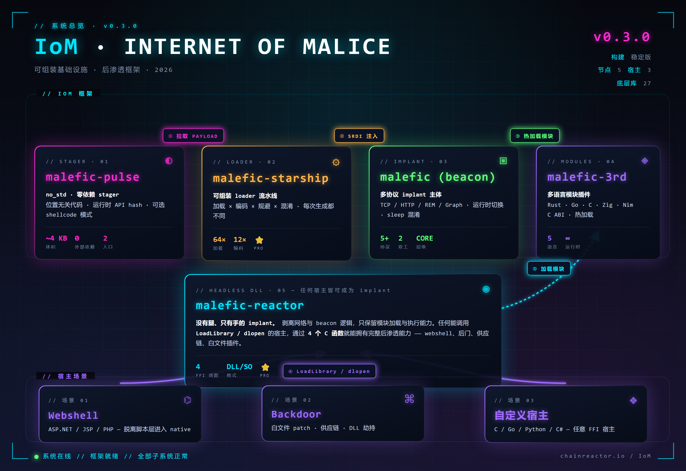
一、Starship —— 可组装的 Loader 框架 ⭐ Pro¶
在实际对抗中，loader 阶段往往是最容易被检测的环节。 如果 loader 是固定的，一旦被特征化就会全面失效。 malefic-starship 的设计理念是**一切可组装**——提供一条完整的流水线，上百种技术互相任意组合，让每次生成的 loader 都独一无二。
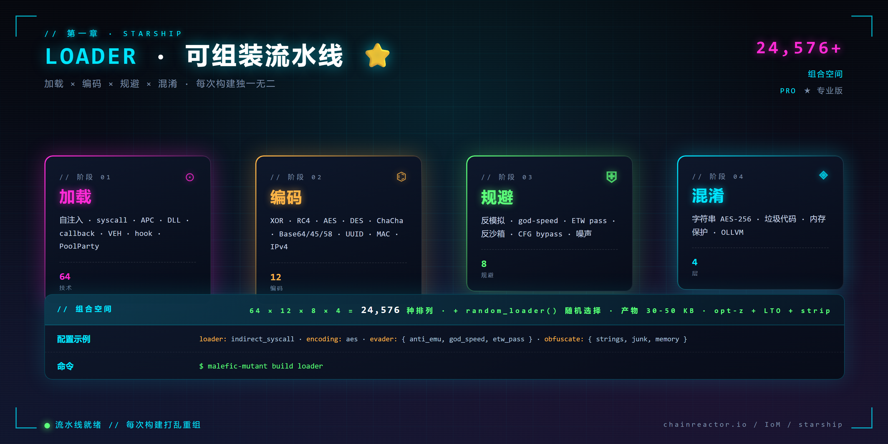
完整技术矩阵¶
64 加载技术 × 12 编码 × 8 规避 × 4 混淆 共 24,576 种排列，加上 random_loader() 随机抽签，每次构建的 loader 都完全不同。
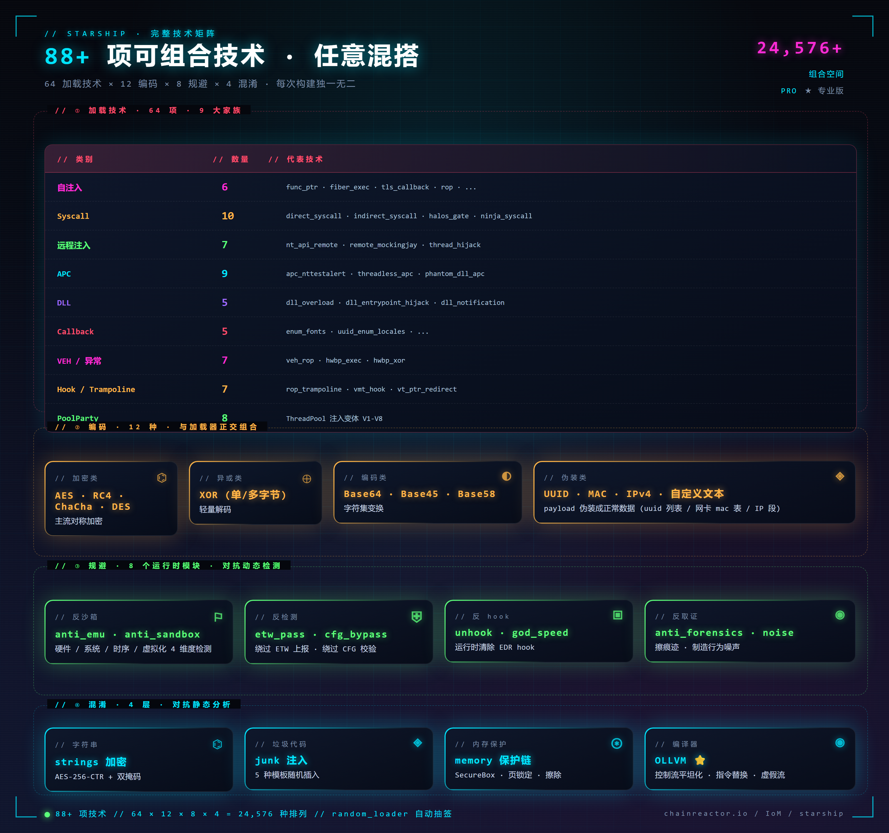
使用示例¶
loader:
loader: indirect_syscall
encoding: aes
evader:
anti_emu: true
god_speed: true
etw_pass: true
obfuscate:
strings: true
junk: true
memory: true
malefic-mutant build loader
编译产物经 opt-level = "z" + LTO + strip 优化后仅 30-50KB。
二、Reactor —— Headless Malefic & Native Webshell ⭐ Pro¶
如果说 malefic 是一个"有腿的 implant"（自带网络、心跳、调度），那么 reactor 就是一个"没有腿但有手的 implant"——剥离所有网络和 beacon 逻辑，只保留纯粹的模块加载与执行能力，编译为标准动态库（DLL/SO）。
reactor 的核心价值在于：任何能加载 DLL 的宿主都能获得 malefic 的全部后渗透能力。webshell、backdoor、供应链植入、合法软件插件——只要能调用 4 个 C 函数，就是一个完整的 implant。
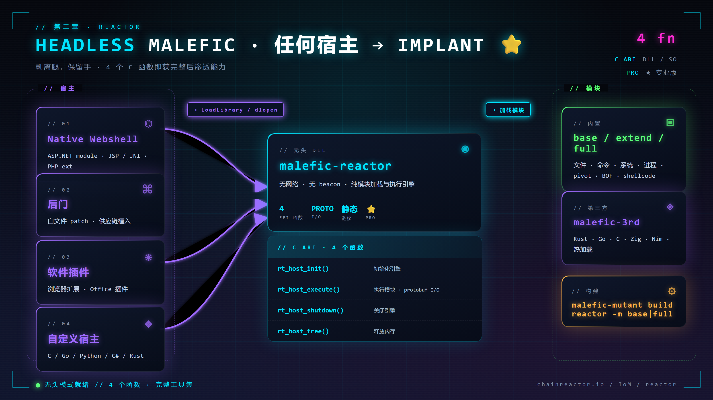
外部程序只需调用 4 个 C 函数：
rt_host_init() → 初始化引擎
rt_host_execute() → 执行任意模块（protobuf I/O）
rt_host_shutdown() → 关闭引擎
rt_host_free() → 释放内存
Native Webshell —— 脱离脚本层的 Webshell¶
传统 webshell（PHP/JSP/ASPX）运行在脚本层，容易被 RASP/WAF 检测。reactor 作为标准 DLL，可以被 ASP.NET native module、Java JNI、PHP extension 加载到 Web 服务器进程的 native 层——脱离脚本引擎的监控范围。
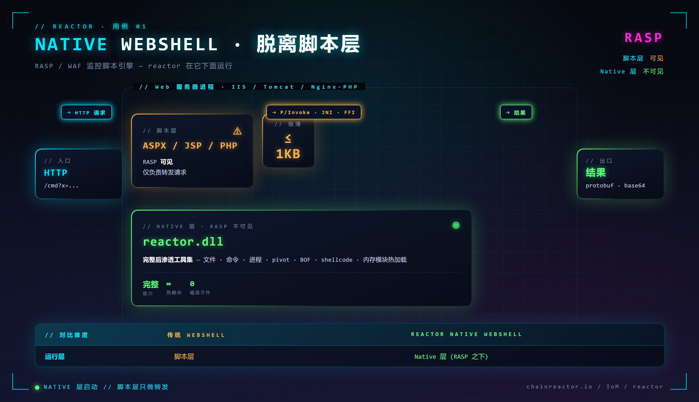
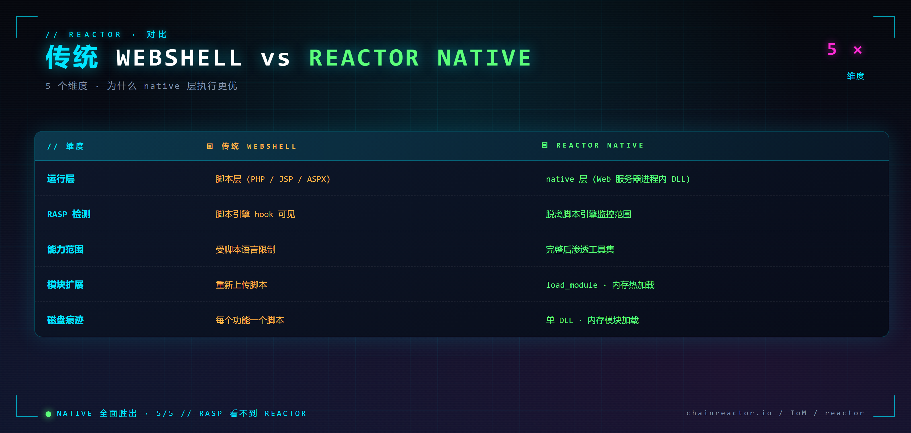
支持按需编译——base（文件管理+命令执行）、extend（+提权/横向/注册表等）、full（全量），也可以空壳 DLL + 运行时热加载。
malefic-mutant build reactor -m base
malefic-mutant build reactor -m full
三、核心架构重构¶
v0.3.0 对 implant 的几乎所有核心组件进行了彻底重构。
Transport¶
之前的 transport 层强依赖 tokio、协议与实现耦合、不支持运行时切换。 v0.3.0 彻底重做：
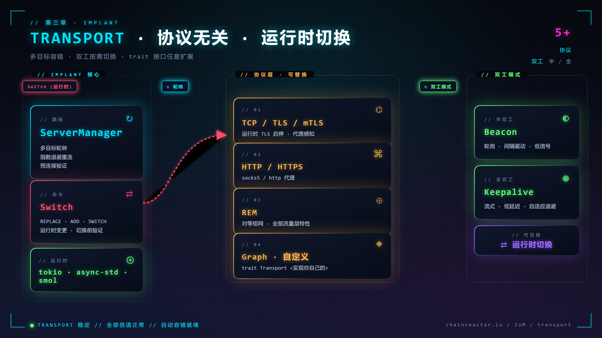
- 协议无关：只要实现标准 trait 接口就能接入任何信道
- 双工支持：半双工 / 全双工，运行时可互转
- 运行时切换：
switch命令支持 REPLACE / ADD / SWITCH 三种模式，切换前自动预连接检查 - 多目标容错：
ServerManager多目标轮转 + 指数退避重连 - 多运行时：tokio / async-std / smol
- REM transport：复用 rem 的全部流量层特性
其他改进：socks5/http 代理、TLS 运行时动态启用/禁用、修复大量假死 bug。
Module Runtime —— 多语言模块生态¶
之前 load_module 要求模块 DLL 与 implant 使用完全相同的 Rust 版本，否则崩溃。 v0.3.0 采用纯 C ABI 协议彻底解决：
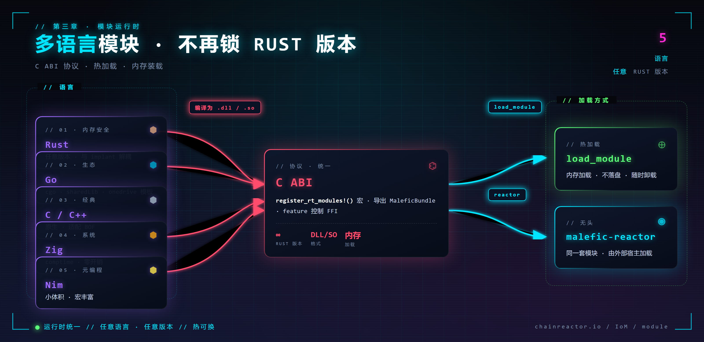
模块可以用任意 Rust 版本甚至 Go/C/Zig/Nim 编写。DLL 通过内存加载不落盘，支持动态加载和卸载。 malefic-3rd-template 提供五种语言的开发模板。
load_module --path module.dll
list_module
unload_module
Pulse —— 极简 stager · 三种产物 · 任意宿主¶
malefic-pulse 是体积最小的入口模块，定位是**把 implant 拉起来**。v0.3.0 把它从依赖外部 win-kit 的空壳 crate 重写为完全自包含的 no_std 框架，并新增 EXE / DLL / Shellcode 三种构建模式与 HTTPS 通信。
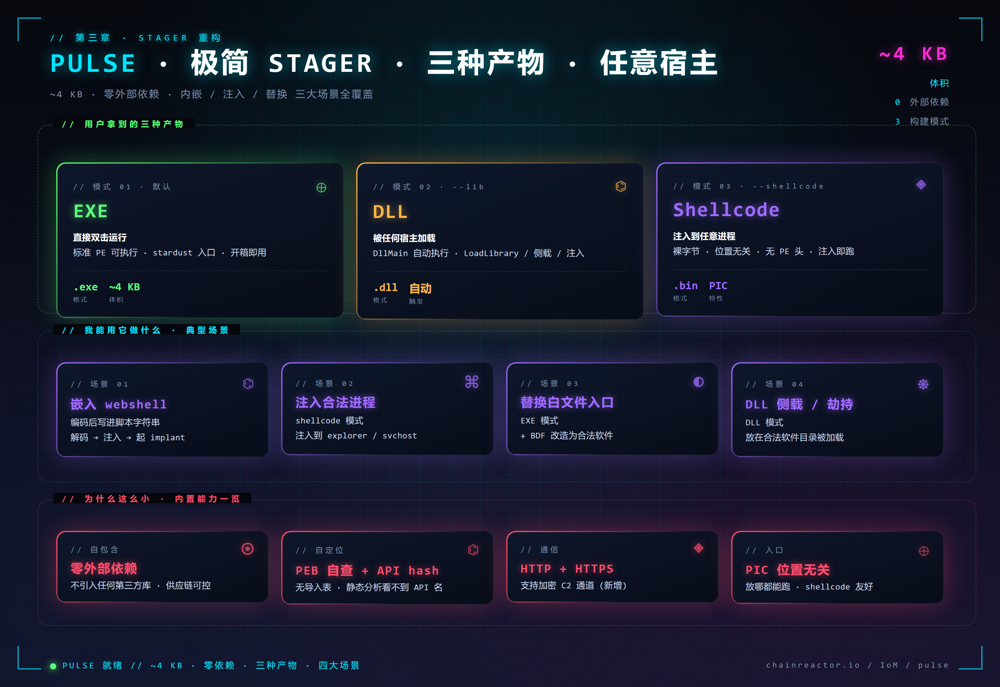
用户视角的能力：
- 三种产物模式 ——
EXE直接运行；DLL被任何宿主 LoadLibrary / 侧载；Shellcode注入到任意进程，注入即跑 - 典型场景 —— 嵌入 webshell、注入合法进程、替换白文件入口、DLL 侧载劫持，~4 KB 的体积可以塞进任何角落
- 零外部依赖 —— 不引入第三方库，供应链可控；自带 PEB 自查 + API hash，无导入表，静态分析看不到一个 API 名
- HTTPS 通信新增 —— 即使在 stager 阶段也能走加密 C2 通道
定位不变：极简 stager，体积优先，最终产物 ~4 KB。
Mutant —— 全栈构建 + PE 加工套件 ⭐ Pro¶
malefic-mutant 不只是构建工具,而是**从配置生成、二进制构建,到 PE 后处理、载荷加工、源码混淆的一站式 CLI**。25+ 个子命令分布在 5 大类:
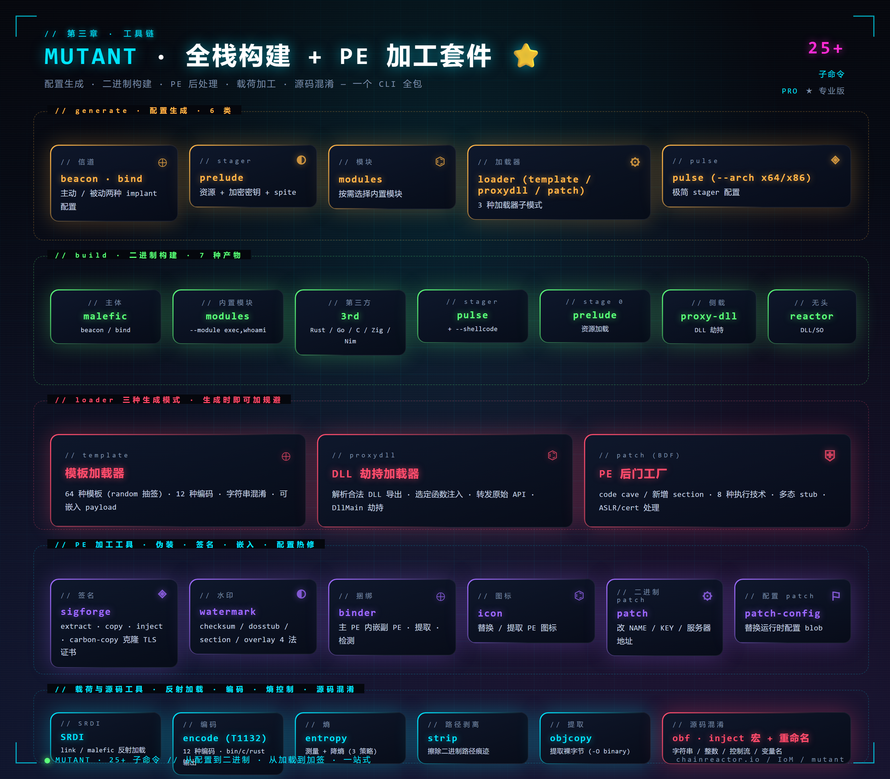
- generate —— beacon / bind / prelude / modules / loader / pulse 6 类配置生成
- build —— malefic / modules / 3rd / pulse / prelude / proxy-dll / reactor 7 种产物
- loader 三种生成模式 ——
template(64 模板 × 12 编码) /proxydll(DLL 劫持) /patch(BDF · code cave + 8 种执行技术 + 多态 stub) - PE 加工 ——
sigforge(签名提取 / 复制 / 注入 / carbon-copy 克隆 TLS 证书) ·watermark(4 种水印方法) ·binder(PE 内嵌) ·icon(图标替换) ·patch(改 NAME/KEY/服务器地址) ·patch-config(运行时 config blob 热修) - 载荷与源码工具 ——
SRDI(反射加载) ·encode(T1132,12 种编码) ·entropy(熵测量与降熵 · 3 种策略) ·strip(路径剥离) ·objcopy(裸字节提取) ·obf(源码级宏注入 + 变量重命名)
代码架构重组 —— malefic-crates 统一底层¶
之前的代码结构是单体式的：malefic-core、malefic-helper、malefic-trait 三个大杂烩 crate 承担了所有底层职责，职责混杂、依赖纠缠。
v0.3.0 将它们彻底拆解为 27 个职责单一的底层库，统一收归 malefic-crates/ 目录：
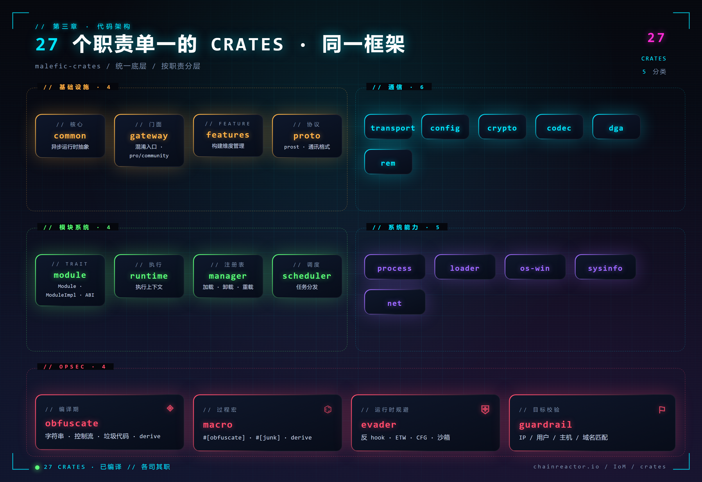
核心设计原则：
- 职责单一：每个 crate 只做一件事（transport、crypto、loader、evader...）
- 运行时解耦：
malefic-common抽象异步运行时，tokio/async-std/smol 一键切换 - 混淆门面：
malefic-gateway统一 API，community (no-op) / professional 编译时透明切换 - Feature 集中管理：
malefic-features管理 source/prebuild × community/professional 两个正交维度 - FFI 隔离：
malefic-module/ffifeature gate，C ABI 导出不会污染正常构建
cargo build -p malefic --release # community + source
cargo build -p malefic -F professional,prebuild --release # professional + prebuild
其他改动¶
- wmi 内化，不再依赖外部库
- 适配任意 Rust 版本
- 修复近 200 个 bug，测试覆盖大幅提升（transport 32 + session 10 + beacon 11 + runtime 44 + 其他）
- PE loader IFT 边界检查修复、超大任务分片传输、指数退避重连
完整技术变更日志详见 IoM Changelog
四、OPSEC —— 纵深防御链 ⭐ Pro¶
传统的 OPSEC 思路是"在某个点加固"——加密字符串、patch API、反沙箱。但任何一个单点被突破，整条防线就暴露了。
v0.3.0 的 OPSEC 设计遵循**彻底模块化**原则：所有 OPSEC 能力被拆解为独立模块——feature-gated 编译、按需加载、模块间零耦合。这不是一条预设的固定防护链，而是一个**可编程的防护体系**：每个模块只负责一件事，按场景选择、任意组合、跨阶段复用。
这种可编程性本质上就是**AI 时代的 OPSEC 方案**。传统 OPSEC 依赖 operator 经验手动配置——哪些模块开、哪些关、怎么组合。当 OPSEC 被彻底模块化后，AI Agent 可以读取每个模块的 OPSEC 评分和 ATT&CK TTP 标签，根据目标环境动态决策：高风险环境自动启用全部防护，低风险场景精简模块以减少开销。OPSEC 从人工经验判断进化为可编程、可度量、可自动化的工程体系。
模块化使得**纵深防御**成为可能：不在某个单点堆叠所有防护，而是将数十个独立模块层层组装为完整的防护链。任意一个模块被突破，其他模块仍然生效。攻击者需要同时突破整条链路上的所有环节才能达成检测。
每个防护手段从三个视角发挥作用：静态（让分析者看不到）、内存（让扫描器扫不到）、动态（让检测器抓不到）。这三个视角贯穿整条链路的每个阶段：
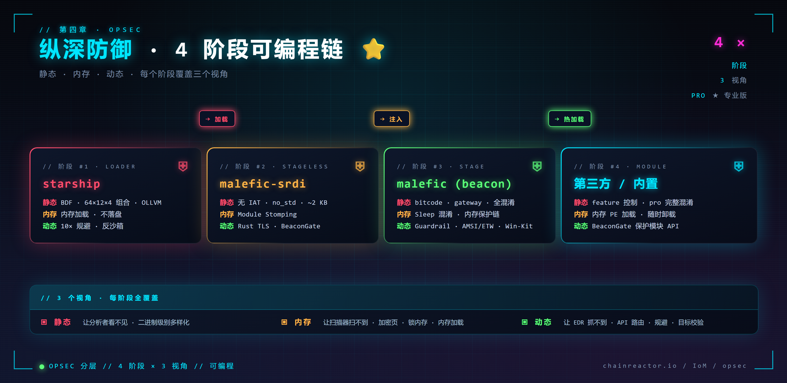
基础层：编译期混淆引擎¶
所有阶段共享同一套编译期混淆引擎。无论是 loader、SRDI、beacon 还是 module，任意阶段的代码都可以使用以下完整混淆能力：
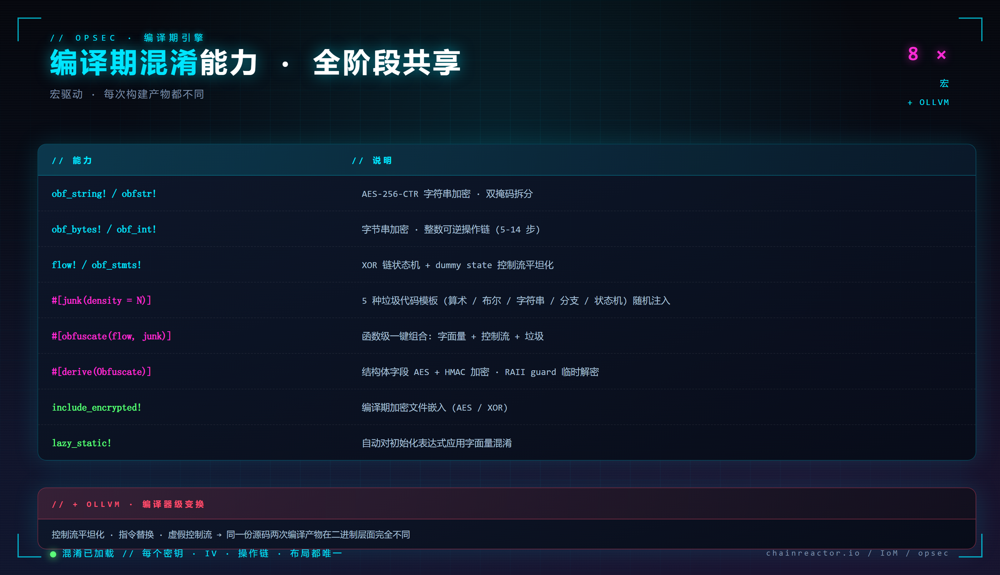
配合 OLLVM（编译器级控制流平坦化 / 指令替换 / 虚假控制流），形成应用层 + 编译器层双重混淆。
每次编译生成完全不同的密钥、IV、操作链、状态机布局、垃圾代码分布——同一份源码的两次编译产物在二进制层面完全不同。
通用防护手段¶
以下防护手段跨多个阶段复用：
- BeaconGate — 敏感 API 调用通过 Win-Kit 动态路由保护，避免直接系统调用被 hook 或监控
- 内存加载 — PE loader 从内存加载，不落盘，不产生文件系统痕迹
4 阶段防护明细¶
每个阶段的静态 / 内存 / 动态三视角防护能力一览：
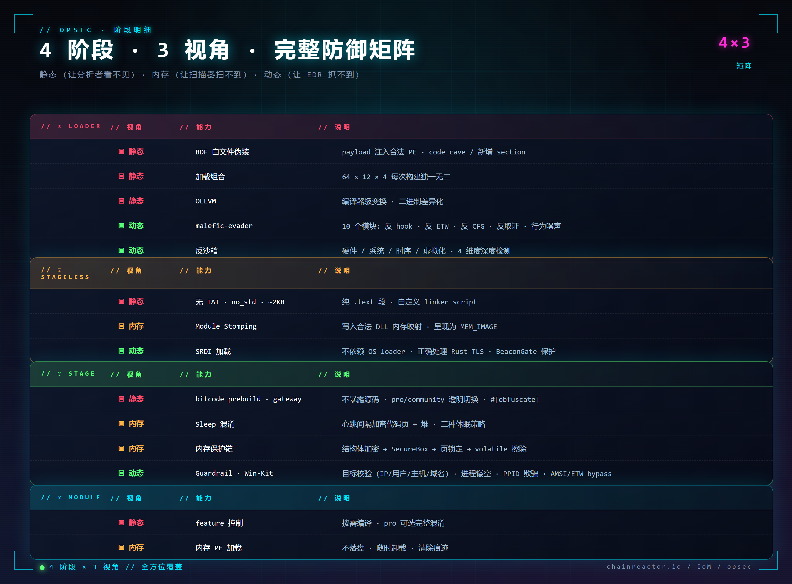
OLLVM-Rust —— 编译器层混淆 · 一键启用 ⭐ Pro¶
OLLVM 是把混淆做到**编译器层**——控制流平坦化、指令替换、虚假控制流，让二进制层面每次构建都不同。ollvm-rust 在 v0.3.0 把启用门槛从"专家任务"压到了"cargo build 即可"。
用户视角的能力：
- 三大变换 —— 控制流平坦化(把函数打散成状态机)、指令替换(算术等价变换)、虚假控制流(注入 dead branch)，反编译图谱完全失真
- 零专家门槛 —— 推荐 Docker 即开即用(单镜像内置 LLVM 17-21 + Rust nightly)；或设置
OLLVM_CRATE+OLLVM_PASSES两个环境变量后cargo build，脚本自动检测 LLVM 版本注入 linker - 平台与版本全覆盖 —— LLVM 17/18/19/20/21 同步支持，Linux + Windows × x86 + x64 共 5 个交叉编译目标
- 完整文档 ——
README入门、ARCHITECTURE架构、LLVM_COMPAT各版本兼容指南
Community vs ⭐ Professional
Community 通过 malefic-gateway 提供透传 (no-op) 版本——所有混淆宏退化为直接内联，功能完全正确，只是不做混淆变换。Professional 透明接入完整引擎。两个版本的 implant 源码完全相同，仅编译时行为不同。
五、IoM for AI —— 可被 AI 驱动的控制面¶
这是 v0.3.0 最具前瞻性的新方向。 IoM 的 client 不再只是一个人类操作的 CLI，而是一个**可以被 AI/自动化系统调用的控制面**。
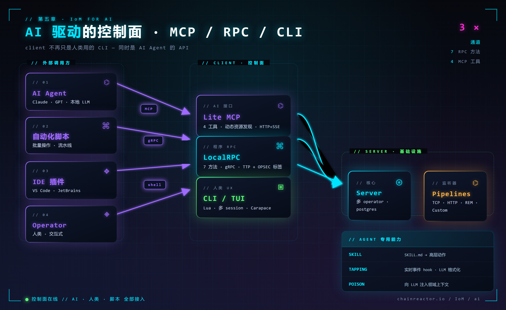
LocalRPC¶
client 内置 gRPC CommandService，提供 7 个方法最小，外部程序可以像操作cli一样驱动 IoM：
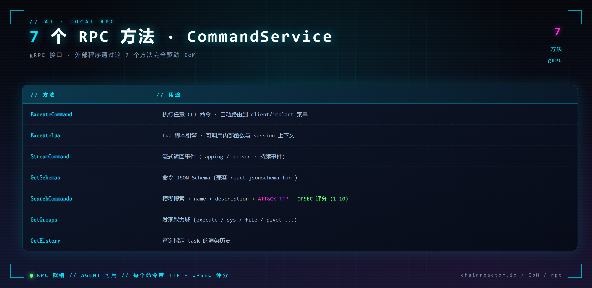
每个命令自带 ATT&CK TTP 标签**和 **OPSEC 安全评分（1-10），AI Agent 可以据此做安全决策。通过 session_id 字段指定目标 session，实现 agent-id 路由。
Lite MCP¶
MCP 是 LocalRPC 的协议适配层，AI Agent 无需硬编码命令列表，运行时动态发现 IoM 的全部能力：
- 4 个核心工具：
execute_command、execute_lua、search_commands、get_history - 动态资源发现：Cobra 命令自动注册为 MCP resource（
uri://<command_path>） - HTTP + SSE 双传输
- 内置 prompt："greeting"（IoM 功能介绍）、"c2_command_execution"（操作指南）
Skills / Tapping / Poison¶
- Skill — 基于 SKILL.md 格式（YAML frontmatter + Markdown body），将命令组封装为高层语义动作（如"横向移动到目标 X"）。三级发现：本地
./skills/→ 全局~/.config/malice/skills/→ 内嵌社区 skills。支持$ARGUMENTS[N]参数替换 - Tapping — 实时监听 implant 事件流。注册 EventHook → 执行命令 → 按 task_id 过滤 → 流式输出。LLM 事件格式化：Request/Response 指示器、工具调用参数、结果元数据（exit code、wall time）
- Poison — 向 AI 上下文注入领域知识（网络拓扑、凭据、目标环境信息），减少不必要的工具调用，提升决策准确度
IoM 预置了丰富的编程用 Skill，覆盖从模块开发到 implant 配置到 OPSEC 策略编排的完整二开流程。AI Agent 加载对应 Skill 后，即刻掌握 IoM 的架构约定、API 用法和最佳实践，无需 operator 花大量时间学习框架细节——Skill 就是给 Agent 的上手文档，加载即用，零学习成本。
AI Agent Module¶
AI Agent 不是一个外部服务，而是作为**标准 malefic module 运行在 implant 内部**：
- C2BridgeTransport：LLM 请求通过 C2 通道桥接到 server，implant 无需 API key、无需直连互联网
- 内置工具：shell（命令执行）、list_directory（目录列表）、read_file（文件读取，支持 offset/length）、write_file（文件写入，支持 append）
- DynamicTool：server 端通过 proto
BridgeToolDef动态注册工具，schema 自动注入给 LLM - 多轮 agent loop：max_turns 可配置，支持持续交互直到任务完成
- 预收集优化：sysinfo 等基础信息预收集后注入 prompt，减少工具调用轮次
Server 端 LLM Provider 代理所有 API 调用，优势：OPSEC（无外部连接）、审计（server 记录所有调用）、灵活（server 控制模型选择和切换）。
六、Server/Client —— 可编程控制面¶
与 implant 的 OPSEC 模块化一脉相承，Server 和 Client 同样遵循**可编程**设计。Client 通过 Lua 脚本引擎提供动态编排能力，Server 通过丰富的扩展接口（Pipeline、Plugin、Builder、RPC）提供可定制的基础设施。整个 IoM 从 implant 到 server 到 client 形成统一的可编程体系——operator、脚本、AI Agent 都能通过各自适合的接口驱动。
CLI / TUI 重构¶
Lua 脚本引擎：Client 内置 Lua 运行时，可以直接编写脚本编排复杂操作流程。Lua 脚本可访问 session 上下文、调用所有内部函数、控制命令执行流程——从简单的批量操作到复杂的多阶段攻击链编排，不再依赖手动逐条输入。LocalRPC 的 ExecuteLua 方法让外部程序也能驱动 Lua 脚本执行。
双模式 CLI：Client 模式（服务器管理）+ Implant 模式（session 交互），根据活跃 session 自动切换，各自独立的命令历史。
Quickstart 向导：首次运行自动进入交互式初始化。
Prompt：状态行 + session-id ❯ 格式，动态显示 listener/session、连接状态、任务队列、OPSEC 评分。30+ 命令组（basic/agent/file/sys/pivot/execute 等），Carapace 自动补全，命令别名。
Terminal Multiplexer：多窗口支持，同时查看多个 session 输出，类似 tmux 分屏。
其他：异步日志不阻塞输入、inline suggestion、bracketed paste、usage hint、表格自适应、profile show、daemon mode。
v0.3.0 新增的扩展接口 —— gRPC / LocalRPC / MCP / Lua¶
v0.3.0 把 client 从"只能人类用的 CLI"扩展为**面向 AI / 脚本 / IDE / Operator 四类调用方的可编程控制面**。Listener / Pipeline 这一套老的 server 管理能力依旧通过 gRPC ListenerRPC 暴露(Pipeline 生命周期 Register → Start → Stop → Delete + SyncPipeline 热更新),但**真正新增的能力是下面这四个扩展接口**:
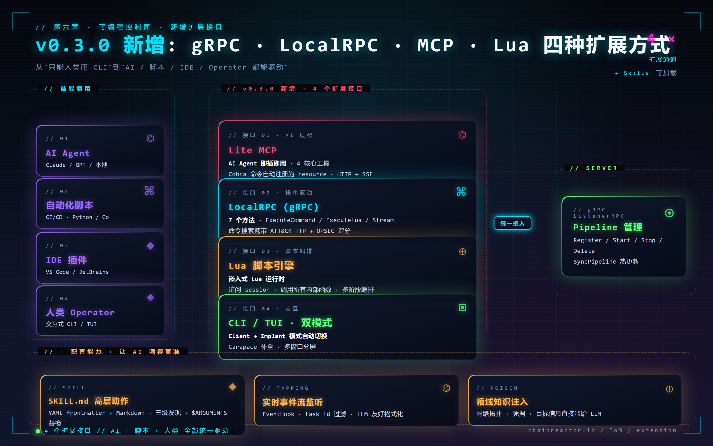
- Lite MCP — AI Agent 即插即用,4 个核心工具,Cobra 命令自动注册为 MCP resource,HTTP + SSE 双传输
- LocalRPC (gRPC) — 7 个方法驱动 client(
ExecuteCommand/ExecuteLua/StreamCommand/GetSchemas/SearchCommands/GetGroups/GetHistory),命令搜索携带 ATT&CK TTP + OPSEC 评分(1-10) - Lua 脚本引擎 — Client 内置 Lua 运行时,可访问 session 上下文,调用所有内部函数,实现批量与多阶段攻击链编排
- CLI / TUI 双模式 — Client 模式(server 管理) + Implant 模式(session 交互)自动切换,Carapace 补全,多窗口分屏
配套能力(让 AI 调得更准):
- Skill —
SKILL.md高层动作封装,三级发现(本地 / 全局 / 内嵌),$ARGUMENTS参数替换 - Tapping — 实时 implant 事件流监听,EventHook + task_id 过滤 + LLM 友好格式化
- Poison — 向 LLM 注入领域知识(网络拓扑 / 凭据 / 目标信息)
Server 配套:
- Certificate 管理 —
GenerateSelfCert(自签名一键生成)/GenerateAcmeCert(Let's Encrypt ACME DNS-01 自动申请) - 在线构建 —
Build/SyncBuildRPC,server 端直接编译 implant 并分发
Build / Profile / Plugin¶
Server 提供多种 Builder 扩展接口，支持从模板到部署的自动化流水线：
- PatchBuilder：加载 config → 检测 transport → 匹配模板 → patch 二进制，快速生成变体
- 多种 Builder：ActionBuilder（GitHub Actions）、DockerBuilder、SaasBuilder、SRDIBuilder
- 跨平台模板：Windows / Linux / macOS × TCP / HTTP / DNS / REM
- Profile 持久化 / 可配置 Malefic Root / 模块命令整合
- Plugin 生态：多 embedded plugin、MAL zip 安装、EvilClaw 集成
测试与稳定性¶
大量新增 unit / integration / E2E / race test，覆盖 Server 并发、Listener 边界、下载恢复、Runtime 异常、命令解析。CI 持续回归。
七、AI Native Offensive Infrastructure¶
现有 C2 框架的所有设计决策都默认了一个前提：最终用户是人类 operator。CLI 是给人看的菜单，README 是给人读的文档，OPSEC 配置依赖 operator 的脑内模型。这一代 IoM 转向**面向 AI 与人协作**——不是给 AI 加一个外挂接口，而是从架构底层把 AI 当作一等公民。
AI Native 的本质是构建 AI First 的 Harness Engineering
AI Native 不是引入新技术，而是把所有原本"留在人类脑子里"的**隐性知识**——文档、经验、决策、边界——显式翻译为机器可处理的工程对象。
可观测 + 可度量 + 可组合，是 AI 决策的三个前提
这三件事本来就是好软件工程的通用原则。所以 "AI Native" 真正改变的不是"AI 能不能用"，而是**系统的不变量是什么**——从隐式的人类经验，变成显式的工程对象。这种显性化首先服务 AI，但同时让人类受益（新人上手更快、跨场景复用更容易）。
「Agent 在哪里需要决策，就跑在哪里」
传统 AI 应用：server 远程决策 → implant 远程执行（决策延迟 = C2 往返时间）。IoM 的设计：Agent 作为标准 module 跑在 implant 内，把 LLM 决策推到目标边界。"AI 一等公民" 在系统拓扑层面的体现——不是外挂，是**架构内置的一类用户**。
前六章看似零散的重构，本质上都是这场 Harness Engineering 的不同侧面。我们也无法在当下定义 AI Native 的进攻性基础设施是什么样的，因此在各个方向上都进行了激进的探索。
结语 —— 基础设施的意义是打破壁垒¶
本质上，我们前面所有的基础设施改进，都是为了**打破各种各样的屏障和壁垒**——跨语言的 module 编写、跨生态的混淆编译、跨平台的编译能力、跨运行时的 transport、跨阶段复用的 OPSEC、跨调用方的控制面……每一项重构都在拆掉一堵墙。
我们不会通过基础设施限制 AI 的能力，而是通过基础设施打破原本的壁垒。
壁垒消失之后，AI 能做什么、operator 能做什么、二者如何协作——这些问题的答案不在框架里，而在使用者手中。v0.3.0的IoM只有熟练运用AI的使用者才能发挥最大的能力。期待你的想象。